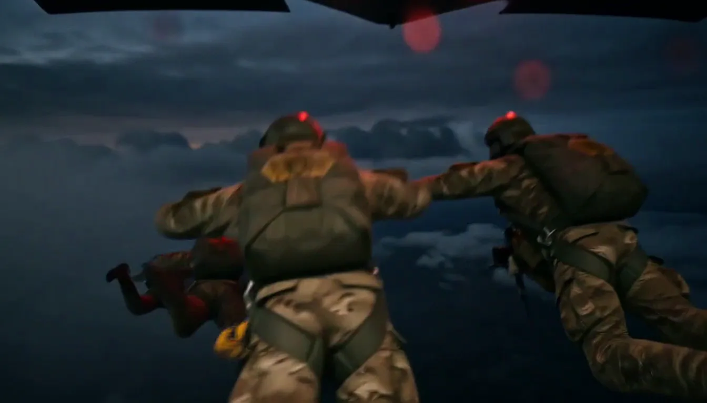
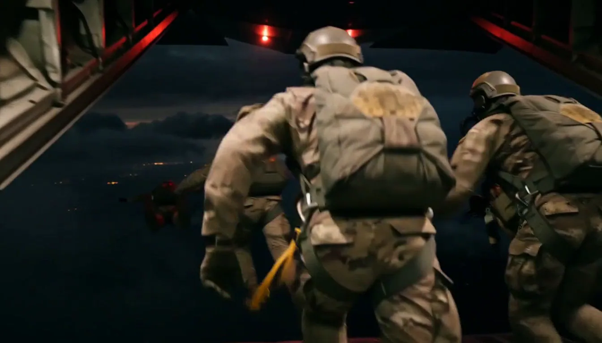
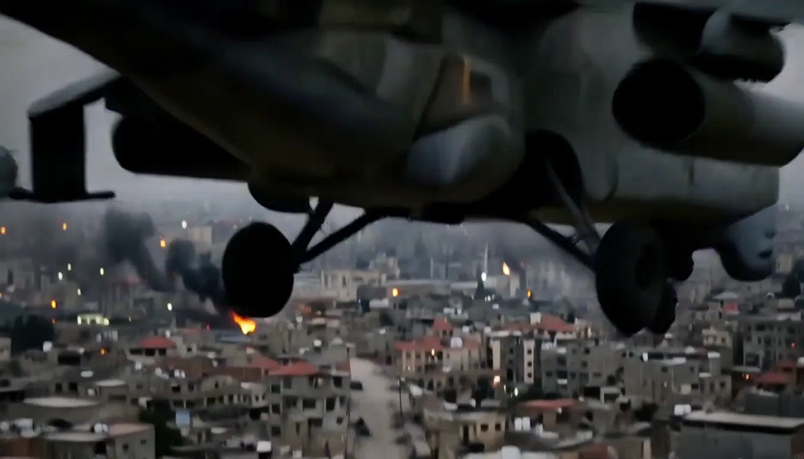
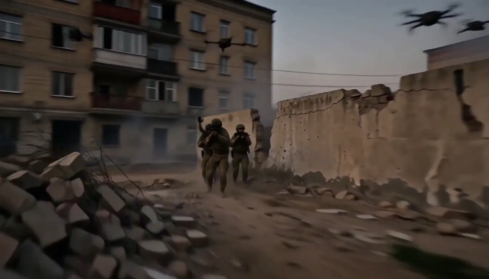
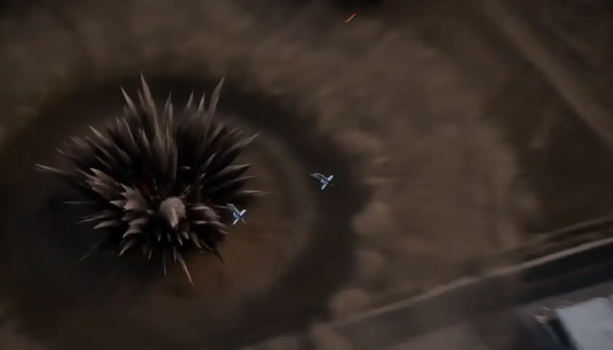

01

NG-1
חד־עיני · כיסהקטן שבארבעה. נכנס לכיס של מעיל, נדלק בשנייה, ומספיק לכל מה שקורה בטווח של שלוש מאות מטר.
- דור
- 2+
- טווח
- 320 מ׳
- משקל
- 190 גר׳
- סוללה
- 18 שע׳
₪3,400
לפרטים ←
מגברי אור ומצלמות תרמיות, מיוצרים ומכוילים ביד. קטלוג של ארבעה מכשירים ושום דבר מעבר לזה.
אותה שנייה, אותו מקום, אפס תאורה נוספת. גרור את הידית.


הקטן שבארבעה. נכנס לכיס של מעיל, נדלק בשנייה, ומספיק לכל מה שקורה בטווח של שלוש מאות מטר.

זה הדגם שרוב האנשים קונים בסוף. מגבר דור שלישי, מנשא קסדה, וארבעים שעות על סוללה אחת — כלומר שבוע עבודה בלי להחליף.

שתי עיניים במקום אחת. שדה ראייה של ארבעים מעלות ותחושת עומק אמיתית, במחיר של משקל כפול על הקסדה.

לא מגבר אור אלא חיישן חום, ולכן הוא רואה מה שאין עליו שום אור: דרך עשן, דרך גשם, ודרך חושך מוחלט.
בחירת מגבר, הרכבה בחדר נקי, כיול מול לוח מדידה, ולילה אחד בשדה. מי שלא עבר את הרביעי חוזר לראשון — וזו הסיבה שאנחנו מייצרים מעט.